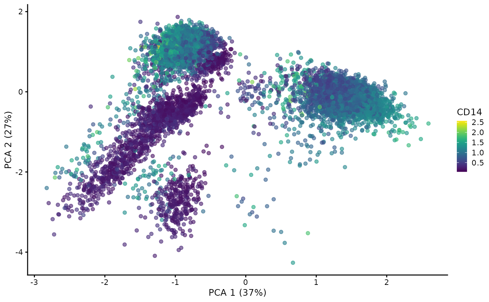

CITE-seq data with MultiAssayExperiment and MuData
Danila Bredikhin
European Molecular Biology Laboratory, Heidelberg, Germanydanila.bredikhin@embl.de
Ilia Kats
German Cancer Research Center, Heidelberg, Germanyi.kats@dkfz-heidelberg.de
2025-02-24
Source:vignettes/Cord-Blood-CITE-seq.Rmd
Cord-Blood-CITE-seq.RmdIntroduction
CITE-seq data provide RNA and surface protein counts for the same cells. This tutorial shows how MuData can be integrated into with Bioconductor workflows to analyse CITE-seq data.
Installation
The most recent dev build can be installed from GitHub:
Stable version of MuData will be available in future
bioconductor versions.
Loading data
We will use CITE-seq data accessible with the SingleCellMultiModal
Bioconductor package, which was originally described in Stoeckius et al.,
2017.
mae <- CITEseq(
DataType="cord_blood", modes="*", dry.run=FALSE, version="1.0.0"
)
#> Dataset: cord_blood
#> Working on: scADT_Counts
#> Working on: scRNAseq_Counts
#> Working on: coldata_scRNAseq
#> Working on: scADT_clrCounts
#> see ?SingleCellMultiModal and browseVignettes('SingleCellMultiModal') for documentation
#> downloading 1 resources
#> retrieving 1 resource
#> loading from cache
#> see ?SingleCellMultiModal and browseVignettes('SingleCellMultiModal') for documentation
#> downloading 1 resources
#> retrieving 1 resource
#> loading from cache
#> see ?SingleCellMultiModal and browseVignettes('SingleCellMultiModal') for documentation
#> downloading 1 resources
#> retrieving 1 resource
#> loading from cache
#> see ?SingleCellMultiModal and browseVignettes('SingleCellMultiModal') for documentation
#> downloading 1 resources
#> retrieving 1 resource
#> loading from cache
#> Warning: 'ExperimentList' contains 'data.frame' or 'DataFrame',
#> potential for errors with mixed data types
#> harmonizing input:
#> removing 2277 sampleMap rows with 'primary' not in colData
mae
#> A MultiAssayExperiment object of 3 listed
#> experiments with user-defined names and respective classes.
#> Containing an ExperimentList class object of length 3:
#> [1] scADT_clr: matrix with 13 rows and 7858 columns
#> [2] scADT: matrix with 13 rows and 7858 columns
#> [3] scRNAseq: matrix with 36280 rows and 7858 columns
#> Functionality:
#> experiments() - obtain the ExperimentList instance
#> colData() - the primary/phenotype DataFrame
#> sampleMap() - the sample coordination DataFrame
#> `$`, `[`, `[[` - extract colData columns, subset, or experiment
#> *Format() - convert into a long or wide DataFrame
#> assays() - convert ExperimentList to a SimpleList of matrices
#> exportClass() - save data to flat filesWe see two modalities in the object — scRNAseq and
scADT, the latter providing counts for antibody-derived
tags. Notably, each experiment is a matrix.
Processing ADT data
While CITE-seq analysis workflows such as CiteFuse should be consulted for more details, below we exemplify simple data transformation in order to demonstrate how their output can be saved to an H5MU file later on.
For ADT counts, we will apply CLR transformation following Hao et al., 2020:
# Define CLR transformation as in the Seurat workflow
clr <- function(data) t(
apply(data, 1, function(x) log1p(
x / (exp(sum(log1p(x[x > 0]), na.rm = TRUE) / length(x)))
))
)We will make the ADT modality a SingleCellExperiment
object and add an assay with CLR-transformed counts:
adt_counts <- mae[["scADT"]]
mae[["scADT"]] <- SingleCellExperiment(adt_counts)
assay(mae[["scADT"]], "clr") <- clr(adt_counts)We will also generate reduced dimensions taking advantage of the
functionality in the scater
package:
mae[["scADT"]] <- runPCA(
mae[["scADT"]], exprs_values = "clr", ncomponents = 20
)
#> Warning in check_numbers(k = k, nu = nu, nv = nv, limit = min(dim(x)) - : more
#> singular values/vectors requested than available
#> Warning in (function (A, nv = 5, nu = nv, maxit = 1000, work = nv + 7, reorth =
#> TRUE, : You're computing too large a percentage of total singular values, use a
#> standard svd instead.
plotReducedDim(mae[["scADT"]], dimred = "PCA",
by_exprs_values = "clr", colour_by = "CD3")
plotReducedDim(mae[["scADT"]], dimred = "PCA",
by_exprs_values = "clr", colour_by = "CD14")
Writing H5MU files
We can write the contents of the MultiAssayExperiment object into an H5MU file:
writeH5MU(mae, "cord_blood_citeseq.h5mu")We can check that both modalities were written to the file, whether
it was a matrix for RNA or
SingleCellExperiment for ADT:
h5 <- rhdf5::H5Fopen("cord_blood_citeseq.h5mu")
h5ls(H5Gopen(h5, "mod"), recursive = FALSE)
#> group name otype dclass dim
#> 0 / scADT H5I_GROUP
#> 1 / scADT_clr H5I_GROUP
#> 2 / scRNAseq H5I_GROUP… both assays for ADT — raw counts are stored in X and
CLR-transformed counts are in the corresponding layer:
h5ls(H5Gopen(h5, "mod/scADT"), recursive = FALSE)
#> group name otype dclass dim
#> 0 / X H5I_DATASET INTEGER 13 x 7858
#> 1 / layers H5I_GROUP
#> 2 / obs H5I_GROUP
#> 3 / obsm H5I_GROUP
#> 4 / var H5I_GROUP
h5ls(H5Gopen(h5, "mod/scADT/layers"), recursive = FALSE)
#> group name otype dclass dim
#> 0 / clr H5I_DATASET FLOAT 13 x 7858… as well as reduced dimensions (PCA):
References
mudata (Python) documentation
muon documentation and web page
Stoeckius, M., Hafemeister, C., Stephenson, W., Houck-Loomis, B., Chattopadhyay, P.K., Swerdlow, H., Satija, R. and Smibert, P., 2017. Simultaneous epitope and transcriptome measurement in single cells. Nature methods, 14(9), pp.865-868.
Hao, Y., Hao, S., Andersen-Nissen, E., Mauck III, W.M., Zheng, S., Butler, A., Lee, M.J., Wilk, A.J., Darby, C., Zager, M. and Hoffman, P., 2021. Integrated analysis of multimodal single-cell data. Cell.
Session Info
sessionInfo()
#> R Under development (unstable) (2025-02-22 r87796)
#> Platform: x86_64-pc-linux-gnu
#> Running under: Ubuntu 24.04.1 LTS
#>
#> Matrix products: default
#> BLAS: /usr/lib/x86_64-linux-gnu/openblas-pthread/libblas.so.3
#> LAPACK: /usr/lib/x86_64-linux-gnu/openblas-pthread/libopenblasp-r0.3.26.so; LAPACK version 3.12.0
#>
#> locale:
#> [1] LC_CTYPE=C.UTF-8 LC_NUMERIC=C LC_TIME=C.UTF-8
#> [4] LC_COLLATE=C.UTF-8 LC_MONETARY=C.UTF-8 LC_MESSAGES=C.UTF-8
#> [7] LC_PAPER=C.UTF-8 LC_NAME=C LC_ADDRESS=C
#> [10] LC_TELEPHONE=C LC_MEASUREMENT=C.UTF-8 LC_IDENTIFICATION=C
#>
#> time zone: UTC
#> tzcode source: system (glibc)
#>
#> attached base packages:
#> [1] stats4 stats graphics grDevices utils datasets methods
#> [8] base
#>
#> other attached packages:
#> [1] scater_1.35.1 ggplot2_3.5.1
#> [3] scuttle_1.17.0 SingleCellMultiModal_1.19.1
#> [5] MultiAssayExperiment_1.33.9 SingleCellExperiment_1.29.1
#> [7] SummarizedExperiment_1.37.0 Biobase_2.67.0
#> [9] GenomicRanges_1.59.1 GenomeInfoDb_1.43.4
#> [11] IRanges_2.41.3 MatrixGenerics_1.19.1
#> [13] matrixStats_1.5.0 MuData_1.11.1
#> [15] rhdf5_2.51.2 S4Vectors_0.45.4
#> [17] BiocGenerics_0.53.6 generics_0.1.3
#> [19] Matrix_1.7-2 BiocStyle_2.35.0
#>
#> loaded via a namespace (and not attached):
#> [1] DBI_1.2.3 gridExtra_2.3 rlang_1.1.5
#> [4] magrittr_2.0.3 compiler_4.5.0 RSQLite_2.3.9
#> [7] png_0.1-8 systemfonts_1.2.1 vctrs_0.6.5
#> [10] pkgconfig_2.0.3 SpatialExperiment_1.17.0 crayon_1.5.3
#> [13] fastmap_1.2.0 dbplyr_2.5.0 magick_2.8.5
#> [16] XVector_0.47.2 labeling_0.4.3 rmarkdown_2.29
#> [19] ggbeeswarm_0.7.2 UCSC.utils_1.3.1 ragg_1.3.3
#> [22] purrr_1.0.4 bit_4.5.0.1 xfun_0.51
#> [25] cachem_1.1.0 beachmat_2.23.6 jsonlite_1.9.0
#> [28] blob_1.2.4 rhdf5filters_1.19.1 DelayedArray_0.33.6
#> [31] Rhdf5lib_1.29.0 BiocParallel_1.41.2 irlba_2.3.5.1
#> [34] parallel_4.5.0 R6_2.6.1 bslib_0.9.0
#> [37] jquerylib_0.1.4 Rcpp_1.0.14 bookdown_0.42
#> [40] knitr_1.49 BiocBaseUtils_1.9.0 tidyselect_1.2.1
#> [43] viridis_0.6.5 abind_1.4-8 yaml_2.3.10
#> [46] codetools_0.2-20 curl_6.2.1 lattice_0.22-6
#> [49] tibble_3.2.1 withr_3.0.2 KEGGREST_1.47.0
#> [52] evaluate_1.0.3 desc_1.4.3 BiocFileCache_2.15.1
#> [55] ExperimentHub_2.15.0 Biostrings_2.75.4 pillar_1.10.1
#> [58] BiocManager_1.30.25 filelock_1.0.3 BiocVersion_3.21.1
#> [61] munsell_0.5.1 scales_1.3.0 glue_1.8.0
#> [64] tools_4.5.0 AnnotationHub_3.15.0 BiocNeighbors_2.1.2
#> [67] ScaledMatrix_1.15.0 fs_1.6.5 cowplot_1.1.3
#> [70] grid_4.5.0 AnnotationDbi_1.69.0 colorspace_2.1-1
#> [73] GenomeInfoDbData_1.2.13 beeswarm_0.4.0 BiocSingular_1.23.0
#> [76] vipor_0.4.7 rsvd_1.0.5 cli_3.6.4
#> [79] rappdirs_0.3.3 textshaping_1.0.0 viridisLite_0.4.2
#> [82] S4Arrays_1.7.3 dplyr_1.1.4 gtable_0.3.6
#> [85] sass_0.4.9 digest_0.6.37 ggrepel_0.9.6
#> [88] SparseArray_1.7.6 farver_2.1.2 rjson_0.2.23
#> [91] htmlwidgets_1.6.4 memoise_2.0.1 htmltools_0.5.8.1
#> [94] pkgdown_2.1.1 lifecycle_1.0.4 httr_1.4.7
#> [97] mime_0.12 bit64_4.6.0-1